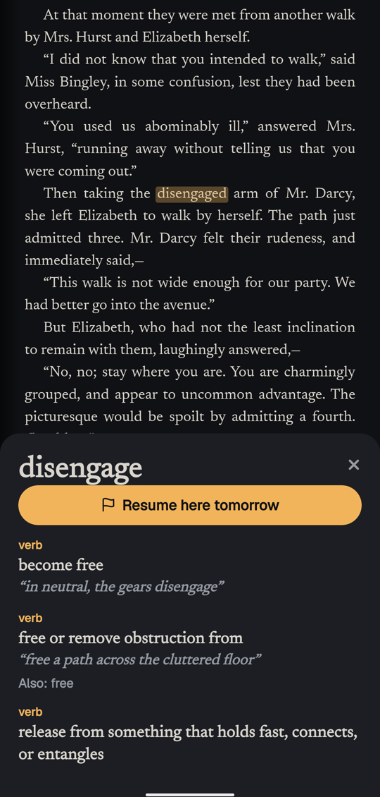
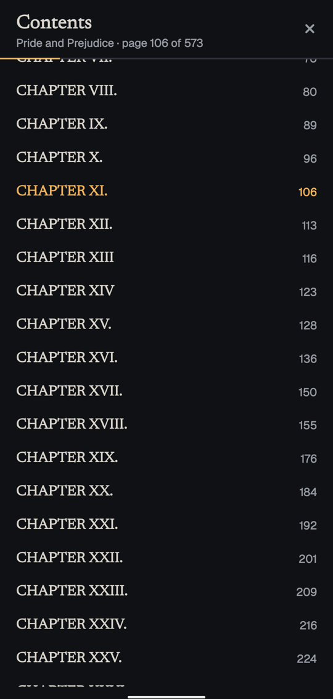

Vāgdevī (वाग्देवी) is Saraswati as the goddess of the word: speech, learning and the book she carries.
#Install
Download the APK (Android 10 or newer, about 50 MB).
Open the file on your phone. Android asks once to allow installing from your browser or files app; allow it, and install. New versions install over the old one and keep your books. All releases.
There's no account and nothing to sign in to. Everything you keep stays on your phone.
#What it does
- Reads PDF, EPUB, Markdown and pictures. Open a file with the + button, or from any other app.
- Finds free books from Standard Ebooks, Project Gutenberg and the Internet Archive, by genre and language. These libraries carry books out of copyright, so recent books aren't there; open your own with +.
- Turns pages like paper. Tap right for next, left for back, the middle for the controls, or swipe the page with your finger. The speed is yours to set.
- Five kinds of page: paper, sepia, night, true black for OLED screens, and e-ink.
- All kinds of PDFs: scans included. They open as printed, and Reading mode turns them into text and pictures you can resize. Scans with no text inside stay as printed pages.
- Contents at a glance: a full index of the book that opens where you are. When a PDF doesn't list its chapters, they're found by reading its pages.
- A resume mark: press and hold a line, tap Resume here tomorrow, and the book opens on that paragraph next time. It stays on the paragraph even if you change the text size.
- A dictionary built in: press and hold any word, offline, about 150,000 English words (WordNet).
- A library that sorts itself: books go on genre shelves using their library's subjects, with favorites on top. Long-press to select several, to favorite, move or delete them, with an Undo.
- Downloads that cope with bad networks: a tab of their own with progress, speed and retry; pause, resume or cancel any of them; they carry on after a dropped connection or a restart, and each book is checked to be complete.
#When something goes wrong
Settings › Share debug logs sends the app's log, kept for a week on the phone, wherever you choose. Attach it to an issue.
#Building it
pnpm install
pnpm -C apps/server build
pnpm -C apps/mobile test
cd apps/mobile && npx expo prebuild --platform android && cd android && ./gradlew assembleReleaseapps/mobile is the app (Expo, React Native; the reader runs pdf.js in a WebView). apps/server builds the bundled dictionary, and holds a laptop server the app doesn't use yet: signing in and syncing come later.
#Credits and licence
Books belong to their libraries and authors: check the rights shown on each book, which vary by country. The dictionary is WordNet. MIT licence.